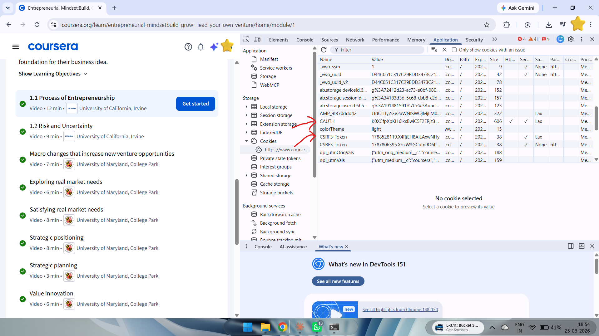

Install Python
This tool runs on Python, so it needs to be on your computer first. Installing Python isn't part of the tool itself.
New to it? Watch the walkthrough on YouTube.
$ python --version Python 3.12.4
Download the tool
Get the project from GitHub and unzip it somewhere you'll find again.
$ git clone https://github.com/raushanraj00/skip_course_by_rau.gitCopy your Coursera cookies
Log in to your Coursera account, then pull three values from your browser:
- Right-click anywhere on the page and choose Inspect.
- Open the Application tab.
- Select Cookies → coursera.org.
- Copy these three values:
- CAUTH
- CSRF3-Token
- __204u

You don't need to create config.json yourself — the command pulls your cookies straight from Chrome.
Click Generate JSON first, then Save config.json. The file downloads to your Downloads folder.
These three fields run entirely on this page. No cookie value is uploaded anywhere.
Create the configuration file
Create this folder if it doesn't already exist:
C:\Users\YourPcUsername\.skip-course
Inside it, create a file named:
config.json
Paste the generated JSON into that file and save it — or just move the downloaded config.json from Step 2 into this folder.
Extract the course slug
Paste your Coursera course URL below and the slug gets pulled out for you.
Install requirements
Open the downloaded project in VS Code.
Go to the project folder, right-click inside it, and choose Open in Terminal or Open in Command Prompt. Then run:
$ pip install -r requirements.txtOnce the install finishes, press Ctrl + C to stop it.
Kill the process with Ctrl + C, then run the same command again.
Run the tool
Pass the slug you extracted in Step 4:
$ python -m raushan.main "your-course-slug"For example:
$ python -m raushan.main "machine-Learning"Install whatever module the error names, then run the command again:
$ pip install httpx # or, if that doesn't work $ python3 -m pip install httpx